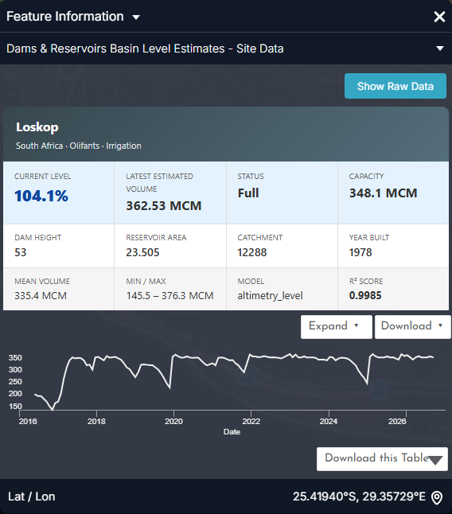
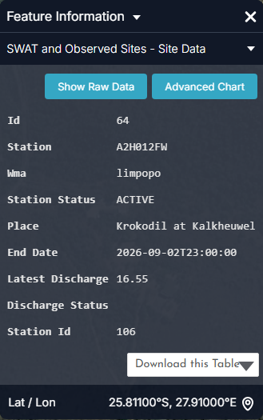

Irrigation water use monitoring¶
The question¶
A water-resources planner or scheme manager wants to know where irrigated land is, whether it is growing, and how much water it consumes over a season — without waiting for licence returns or field surveys.
| Who | Decision | Cadence |
|---|---|---|
| Catchment / water management agencies (DWS, ARA-Sul, ZINWA, WUC) | Licence compliance, detection of unregistered irrigation, allocation caps | Seasonal (post-harvest) |
| Irrigation boards and scheme managers | Quota use, scheduling, efficiency benchmarks between blocks | Monthly in season |
| Dam operators | Release planning against downstream irrigation demand | Weekly (dry season) |
| LIMCOM / water-accounting analysts | Sectoral consumption for the basin account | Annual |
At a glance
- Irrigated Mapping classifies irrigated cropland at 20 m from Sentinel-2, as a time series — the layer to watch for expansion.
- Major schemes (designed → currently irrigated): Lower Limpopo 70,000 → 45,000 ha, Chókwè 30,000 → 22,000 ha, Loskop 27,000 → 19,000 ha, Tuli Block 15,000 → 12,000 ha, Groot Letaba 10,000 → 8,000 ha.
- Managed (irrigated) land is 2 % of the basin but ~8 % of its evapotranspiration; its ET peaks in February and stays at 15–20 % of peak through the rainless winter — water that must come from dams, rivers and boreholes.
- Loskop Dam, which supplies the largest South African scheme, has averaged 96 % full since 2017; its one supply crisis was 2016 (42 %).
How the workflow fits together¶
flowchart TD
A[Irrigated Mapping<br/>timeline: year vs year] --> B{Irrigation outside<br/>Irrigation Areas LIMIS?}
B -- yes --> C[Flag unregistered blocks]
B -- no --> D[Blue ET Africa vs Green ET Africa<br/>Compare]
C --> D
D --> E[Quantify a scheme<br/>Water Use Time-series Polygon]
E --> F[Efficiency<br/>Beneficial Fraction · ET Fraction]
F --> G{Supply secure?<br/>Dams & Reservoirs Basin Level Estimates}
G -- no --> H[Quota cut · scheduling advice]
G -- yes --> I[Seasonal report · Story]
H --> IData you will use¶
| Dataset | Where in the catalogue | What it tells you |
|---|---|---|
| Irrigated Mapping | Natural Basin Characteristic → Land Cover and Land Use | Satellite-derived irrigated areas (20 m, Sentinel-2), as a time series |
| Irrigation Areas (LIMIS) | Water Resources → Water Infrastructure | Registered / mapped irrigation schemes (reference boundaries) |
| Water Use Time-series (Irrigated Areas) (Polygon) | Water Use Monitoring and Analysis | An analysis process: choose an area and get its monthly water-use time series (m³) from irrigated-area masks × WaPOR ET |
| WaPOR Downscaled · ETa Monthly Limpopo | Natural Basin Characteristic → Climate | Actual evapotranspiration — the water actually consumed by crops |
| Blue ET Africa · Green ET Africa | Water Use Monitoring and Analysis → Water Accounting → Evapotranspiration & Water Use | Splits consumption into irrigation-supplied (blue) and rain-fed (green) water |
| Beneficial Fraction Africa · ET Fraction Africa · Evaporative Stress Index Africa | same group | How much of the water consumed does useful work (crop growth), and crop stress |
| Land Use · Land Use (LIMIS) · MODIS NDVI 16-Day Composite | Natural Basin Characteristic → Land Cover and Land Use / Vegetation | Context: cropland vs. natural vegetation; crop vigour through the season |
| Dams & Reservoirs Basin Level Estimates · Dam locations | Water Resources → Reservoirs and Storage | Supply security for dam-fed schemes |
| Groundwater Zones (LIMIS) · Groundwater Level Points | Water Resources → Groundwater | Supply for borehole-fed irrigation |
Walkthrough¶
- Explore data → Search the catalogue →
Irrigated Mapping→ Add to the map. The layer is time-varying, so a timeline appears beneath the map. - Use Ideal Zoom on the Workbench card to frame the layer, then use the timeline arrows to step between dates. Irrigated fields stand out as sharp, regular shapes (centre-pivot circles in the Tuli Block and Loskop; canal blocks at Chókwè) that stay green through the dry season.
- Add Irrigation Areas (LIMIS) and compare: irrigation detected outside the registered schemes is a first signal of unlicensed or expanding use. Along the Limpopo main stem between Botswana and South Africa, riverside pivots outside the LIMIS polygons are common.
- Add Blue ET Africa. In the Workbench, lower its opacity to ~60% so the fields remain visible underneath. Bright blue-ET over a field means it is drawing on irrigation water, not rain.
- Use Compare (Map Tools) to put Blue ET on the left and Green ET on the right for the same month — in August the contrast is starkest: green ET is near zero everywhere, blue ET marks every irrigated block.
- To quantify a scheme: open Water Use Time-series (Irrigated Areas) (Polygon) from Water Use Monitoring and Analysis, select or draw the area of interest (or the LIMIS scheme polygon) and run it. The result is a monthly time series of water use in m³ for that polygon that you can read directly or download.
- Add Beneficial Fraction Africa over the same scheme: blocks with high blue ET but a low beneficial fraction are losing water to bare-soil evaporation — candidates for scheduling or mulching advice.
- Add Dams & Reservoirs Basin Level Estimates and click the supplying dam (Loskop, Tzaneen, Middle Letaba, Massingir/Macarretane) to check whether the season's demand can be met (Figure 3).
- Story → Capture Scene for the before/after dates, and Share / Print the link.
Reading the charts¶
The figures below are the portal's own charts, captured from the Feature Information panel (click a feature) and from the Charts dock that opens with the panel's Expand button. Every station, dam and site chart in the portal follows the same pattern: a summary card, a preview chart, Expand to enlarge, Download for the CSV.


- Main use: Irrigation and catchment tell you what the dam is for and how fast it can refill; current level at the start of October is the number the irrigation board sets quotas on.

- Each saw-tooth is one irrigation season: full after the summer rains, drawn down from May to November as the scheme takes its quota, then refilled. The depth of the tooth is the season's consumption from storage.
- 2016 (down to ~150 Mm³, 42 %) followed the failed 2015 rains — the year quotas were cut; 2019 and late 2024 (~250 Mm³) were tight but not critical.
- Compare the current position with the same month in previous years before committing the coming season's allocation.

- The 2016–19 decline and 2020 recovery visible here set the irrigated area at Chókwè in those seasons; the layer keeps monitoring after the gauge record ends (2019).


- River gauges below a scheme show its return flows and abstraction in the dry season; a gauge reading near zero while the scheme's fields are green in Irrigated Mapping is the signature of full abstraction.
- The scheme-level consumption chart itself comes from Water Use Time-series (Irrigated Areas) (Polygon) — draw the polygon and run it; the result is monthly m³ for your area (it is an analysis process, so there is no fixed feature to click).
Longer-term context (charts derived from the same API data)
These are not portal screens: they were rendered from the same series with tools/use_case_charts.py to show what the portal's series look like over decades.


Indicators and what to do¶
| Indicator | Where | Threshold | Typical action |
|---|---|---|---|
| Irrigated extent change | Irrigated Mapping timeline, year vs year | > 5 % growth in a sub-basin | Reconcile against licences |
| Irrigation outside registered areas | Irrigated Mapping vs Irrigation Areas (LIMIS) | Any persistent block > 2 seasons | Inspection / licensing |
| Blue ET over cropland | Blue ET Africa (Aug) | High where no scheme is registered | As above |
| Scheme consumption | Water Use Time-series (Polygon) | Above allocation (m³/season) | Quota enforcement |
| Beneficial fraction | Beneficial Fraction Africa | Low over irrigated blocks | Efficiency programme |
| Supply dam storage | Basin Level Estimates at 1 October | < 60 % | Reduce allocation for the season |
| Crop stress | Evaporative Stress Index Africa · MODIS NDVI | Stress over irrigated blocks in season | Water not reaching the field: check delivery losses |
Worked example — sizing a scheme's seasonal use¶
- Add Irrigation Areas (LIMIS) and zoom to the Loskop Irrigation Scheme on the Olifants below Loskop Dam.
- Add Irrigated Mapping; step the timeline from an early to a recent year. Compare irrigated pixels inside and outside the LIMIS boundary — pivots along the Olifants downstream of the scheme are the growth.
- Run Water Use Time-series (Irrigated Areas) (Polygon) on the scheme boundary for the last two hydrological years. Read the monthly m³; sum Oct–Sep for the seasonal total and note the winter share (Figure 2's shape).
- Add Blue ET Africa and Beneficial Fraction Africa for February: the blocks with high blue ET and low beneficial fraction are the ones to visit.
- Click Loskop in Dams & Reservoirs Basin Level Estimates: 104 % on 10 September 2026, forecast still above 90 % in November — the coming season's allocation is secure. Repeat for Middle Letaba (10.5 %): that scheme's 2,500 ha cannot be fully supplied this season.
- Capture the scheme map, the water-use chart and both dams as a Story.
Seasonal-report checklist¶
- Irrigated area this season vs last (ha), inside and outside registered schemes
- Seasonal water use per scheme (m³) from the polygon time-series, with winter share
- Blue vs green ET map for the peak month and for August
- Beneficial-fraction hotspots for efficiency follow-up
- Supply-dam storage at season start and forecast at season end
- Story link
Limits to keep in mind¶
- Satellite ET products are modelled estimates at their native resolution (WaPOR downscaled, Africa-wide ET layers); use them for patterns and trends, and validate volumes against metered abstractions where they exist.
- Irrigated Mapping is classified from imagery; cloud cover in the wet season can reduce confidence for individual dates — look at several. Irrigated pasture and orchards under netting can be under-detected.
- The polygon Water Use Time-series runs a server-side process; large areas take longer, and it needs a signed-in session. It returns consumption (ET), not abstraction — conveyance losses are extra.
- Scheme metadata (command area, irrigated area) are compiled from national sources and gazettes; treat them as indicative.
Related¶
Water accounting · Reservoir monitoring · Droughts · Workbench — time series